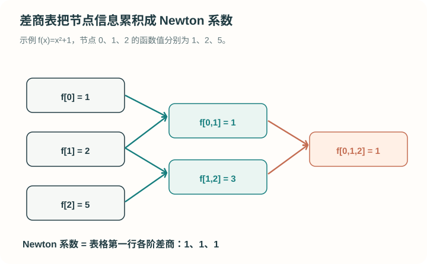
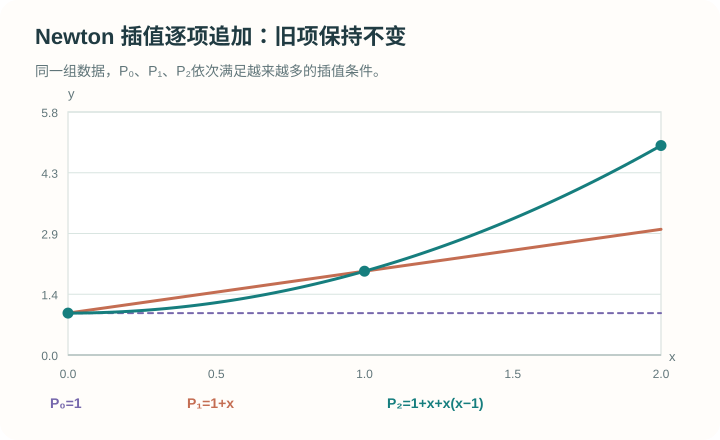

CHAPTER 04 · NUMERICAL ANALYSIS
Newton 插值与差商：逐项构造多项式
差商把节点数据组织成可逐项扩展的多项式结构。推导 Newton 形式，并严格区分完整预处理与增量追加的成本。
01 · 新节点到来后，还要从头构造多项式吗？
仪器先报告 (0,1) 与 (1,2)，后来又报告 (2,5)。它们来自函数 f(x)=x²+1。我们希望新增样本到达时保留已有计算，而不是每次都重新求解一个完整的线性系统。
Newton 插值的核心是把多项式写成按节点逐项累加的形式：新项在所有旧节点上为零，所以加上新项不会破坏既有插值条件。这里的 Newton 插值与解非线性方程的 Newton 迭代不是同一个算法。
02 · 差商：从节点值到三角计算图
零阶差商是函数值，一阶差商是两点斜率。对互异节点定义递推关系；高阶差商等于两个低一阶差商的差，再除以这一组节点的总跨度：
对于数据 x=[0,1,2]、y=[1,2,5]，一阶差商是 1 与 3，二阶差商是 (3−1)/(2−0)=1。

03 · 新增一项为何不改变旧节点？
将第一行的各阶差商记为 a₀,…,aₙ。第 k 项由系数 aₖ 乘以 (x−x₀)…(x−xₖ₋₁) 组成，因此在全部旧节点为零。
式 (4.2) 中第 k 项的乘积上限为 k−1，因此它在全部前 k 个节点处为零。
例子里的多项式依次是 P₀(x)=1、P₁(x)=1+x、P₂(x)=1+x+x(x−1)=x²+1。

04 · O(n²) 与 O(n) 为什么不矛盾？
对 n+1 个节点，从零构造差商系数一般需要 O(n²) 算术操作。一维原地差商计算可以只用 O(n) 辅助空间。系数已经算好后，利用 Newton 嵌套乘法在一个点求值只需 O(n)。
当旧节点与系数被保留，追加一个互异新节点 x*，可通过在新节点求旧多项式并计算节点差乘积得到追加系数，这两个步骤各用 O(n) 操作：
追加式可能在节点过近或高次数时引入消去、下溢等数值问题；O(n) 描述的是复用已有状态下的计算量，不是对任意输入的稳定性保证。
05 · 构造差商系数并验证数值结果
def divided_diff(xs, ys):
assert len(xs)==len(ys)>0 and len(set(xs))==len(xs)
a=list(map(float,ys))
cs=[a[0]]
for k in range(1,len(xs)):
for i in range(len(xs)-k):
a[i]=(a[i+1]-a[i])/(xs[i+k]-xs[i])
cs.append(a[0])
return cs
def evaluate(xs,cs,x):
value=cs[-1]
for i in range(len(cs)-2,-1,-1):
value=cs[i]+(x-xs[i])*value
return value
xs=[0.,1.,2.]
cs=divided_diff(xs,[1.,2.,5.])
assert cs==[1.,1.,1.]
assert abs(evaluate(xs,cs,1.5)-3.25)<1e-12
print(cs,evaluate(xs,cs,1.5))反向嵌套求值只需要乘加，不必每次重新显式展开整个多项式。对于大量查询点或者高次数问题，也需要与重心插值、分段插值等方法比较实际数值性能。
原始资料与延伸阅读
以下资料用于核对定理适用条件、稳定计算形式和库函数行为。本页的图解与算例均独立构造。
- Jean-Paul Berrut & Lloyd N. Trefethen, Barycentric Lagrange Interpolation。SIAM Review 46(3), 2004，重心插值形式与数值计算。
- Nicholas J. Higham, Accuracy and Stability of Numerical Algorithms。数值误差分析和稳定性的方法论。